This post is a rewrite and extension of Stephen Hardy’s Homomorphic Encryption Illustrated Primer (2018). I have kept his illustrative FV example and added a ground-up Learning With Errors foundation, animations, and reproducible code. All credit for the original explanation and the toy example is his.
Imagine handing a locked box of numbers to a stranger, asking them to do your arithmetic inside the box, and getting back a locked box with the right answer, all without them ever seeing a single digit. That is homomorphic encryption. You compute on data you cannot read.
Cryptographers have wanted this for almost the entire history of the field. Rivest, Adleman, and Dertouzos (1978) posed the problem one year after RSA, under the name privacy homomorphisms, and nobody could solve it for thirty-one years. When Gentry (2009) built the first fully homomorphic scheme, the surprise was not just that it worked but how. The same noise that protects the data is carefully controlled, so that arithmetic can flow around it. Every practical scheme since, including the one in this post, runs on that idea.
It sounds impossible. This post is about why it is not. If
you can read Python and remember what % does, you have all
the math you need. By the end you will understand a real scheme, the
Fan-Vercauteren (FV) scheme from Fan and Vercauteren (2012), well enough to follow its
equations line by line, and to run it yourself.
Here is the plan.
- The one idea - hide a value under a noisy mask.
- Learning With Errors (LWE) - the simplest concrete version.
- Ring-LWE - swap clumsy vectors for arrays-with-a-twist (polynomials).
- The FV scheme - keys, encryption, decryption, with a worked example.
- Homomorphic operations - adding and multiplying ciphertexts, and the noise that comes with it.
- Extensions - batching, bootstrapping, and how security is chosen.
Between parts 3 and 4 there is also an interlude that opens the hood on the math itself. It covers roots of unity, the NTT, the Chinese Remainder Theorem, and what a “lattice” actually is. If you have ever used an FFT or sharded a database, you already know more of that material than you think.
Parameters \(t\) and \(q\)
Every scheme in this post uses two moduli. A modulus is just the number you pass to %, the same wraparound you see in fixed-width integer overflow.
\(t\) is the plaintext modulus. Each message coefficient is an integer from \(0\) to \(t-1\). In the toy example later, \(t = 7\), so plaintext coefficients behave like digits mod 7.
\(q\) is the ciphertext modulus. Ciphertext coefficients are stored mod \(q\), and \(q\) is much larger than \(t\). In the toy example, \(q = 874\). Think of \(q\) as a wider integer type that wraps the message and leaves room for noise.
The scaling factor \(\Delta = \lfloor q/t \rfloor\) puts each message value into a wide “lane” of about \(\Delta\) consecutive residues mod \(q\). Small noise stays inside the lane, and rounding snaps back to the correct message. Plaintext arithmetic uses % t. Ciphertext arithmetic uses % q. Decryption divides by \(\Delta\) (or multiplies by \(t/q\) in the polynomial version) and then applies % t.
Here is what the lanes look like with the toy numbers \(t = 7\), \(q = 874\), \(\Delta = 124\). Each message value \(m\) is stored near its lane center \(m \cdot \Delta\), and it owns the whole stretch of values that round back to it.
message m: 0 1 2 3 4 ...
lane center: 0 124 248 372 496 (m * Delta)
lane of m=2: [186 ....... 309] (center 248, width Delta)
encrypt m=2, noise +9: 248 + 9 = 257 257/124 = 2.07 -> rounds to 2 correct
encrypt m=2, noise +70: 248 + 70 = 318 318/124 = 2.56 -> rounds to 3 WRONGWith noise 9 the stored value is 257. That is not the exact center, but it is still inside the lane of \(m = 2\), so dividing by 124 and rounding returns exactly 2. The stored number was “wrong” by 9, and decryption did not care. With noise 70 the value drifts past the lane edge into the territory of \(m = 3\), and decryption silently returns the wrong message. That edge sits \(\Delta/2 = 62\) away from the center, which is why the rest of the post keeps repeating the rule \(|\text{noise}| < \Delta/2\). Every mention of “noise budget” below is this picture: keep the value inside its lane.
How to read the math
There are equations ahead, but only a handful of symbols, and each one maps directly to a line of Python.
| Symbol | Read it as | In Python |
|---|---|---|
| \(t\) | plaintext modulus (message range \(0 \dots t-1\)) | m % t |
| \(q\) | ciphertext modulus (\(q \gg t\)) | x % q |
| \(x \bmod q\) | wrap \(x\) into range, clock-style | x % q |
| \([x]_q\) | wrap into the signed range \((-q/2,\, q/2]\) | (x + q//2) % q - q//2 |
| \(\lfloor x \rceil\) | round to the nearest integer | round(x) |
| \(\vec a \cdot \vec s\) | dot product | sum(a[i]*s[i] for i in range(n)) |
| \(\Delta\) | the message scaling factor \(\lfloor q/t \rfloor\) | delta = q // t |
| \(d\) | polynomial length (number of coefficients) | len(poly) |
| polynomial of degree \(< d\) | just an array of \(d\) ints | np.zeros(d, dtype=np.int64) |
The signed-range trick \([x]_q\)
deserves one beat of attention, because we use it everywhere. It is
exactly the uint8 vs int8 story. The byte
0xFF is 255 if you read it unsigned and -1 if you read it
signed. Same bits, different label. We prefer the signed view because in
this scheme “small” always means “near zero”, and \(-1\) is small while \(255\) does not look small.
Strap in.
1. The one idea
Every scheme in this post is a variation on a single move. Take the number you want to protect, then do three things.
- scale it up so it occupies the “high bits” (call the scaled message \(\Delta m\)),
- add a big, random-looking mask so the result looks like noise,
- add a little extra noise \(e\) down in the “low bits”.
The result is your ciphertext. If you hold the secret, you can subtract the mask exactly, leaving \(\Delta m + e\). The message sits in the high bits and the noise sits in the low bits. Divide by \(\Delta\) and round, and the noise falls away like truncated low bits.
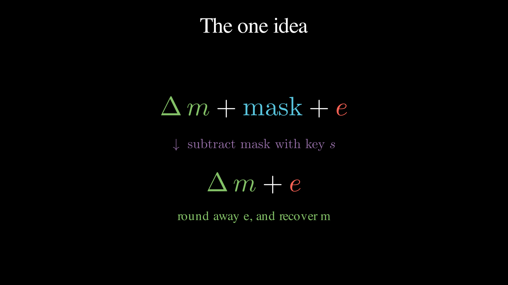
That is the entire story. Everything below is about making “mask” and “cancel the mask” precise, and about keeping the noise small enough to round away even after we compute on the ciphertext.
Two questions should be nagging you.
- Why add noise at all? The mask is like a one-time pad, but a linear one. It is built from additions and multiplications, which is exactly what lets arithmetic pass through it. Linear structure alone would also let an attacker solve for the pad with linear algebra. The noise breaks that plan. It turns “solvable with Gaussian elimination” into a genuinely hard problem.
- Why does rounding not destroy the message? Scaling by \(\Delta = \lfloor q/t \rfloor\) gives each message value a wide “lane” of about \(\Delta\) consecutive integers mod \(q\). As long as noise stays inside the lane, rounding snaps back to the right value. If it ever leaves the lane, we decode the wrong message. Managing that error margin is the central engineering problem of the whole field.
2. Learning With Errors
Numbers on a clock
All ciphertext arithmetic happens modulo the ciphertext modulus \(q\). Numbers wrap around like a clock, or
like fixed-width integer overflow. On a 24-hour clock, \(21 + 6 \equiv 3 \pmod{24}\). You pass 24 and keep
going. In code, (21 + 6) % 24 == 3.
If you have ever debugged unsigned integer overflow, you already have
the intuition. uint32 arithmetic is arithmetic mod
\(2^{32}\). The only novelty here is
that we pick moduli that are not powers of two, and that we usually
relabel the top half as negatives (the signed view from the cheat
sheet), so mod 24 runs \(-11 \dots 12\)
instead of \(0 \dots 23\).
The LWE sample
Fix a secret array \(\vec s = (s_1, \dots, s_n)\) with small entries. Now generate a uniformly random array \(\vec a\) and compute
\[ b = \vec a \cdot \vec s + e \pmod q \]
where \(e\) is a small random error. In Python,
a = [random.randrange(q) for _ in range(n)] # public, uniform
e = round(random.gauss(0, sigma)) # tiny, e.g. -2..2
b = (sum(ai * si for ai, si in zip(a, s)) + e) % qThe pair \((\vec a,\, b)\) is an LWE sample. It is a random vector, plus its dot product with the secret, corrupted by a small amount of noise.
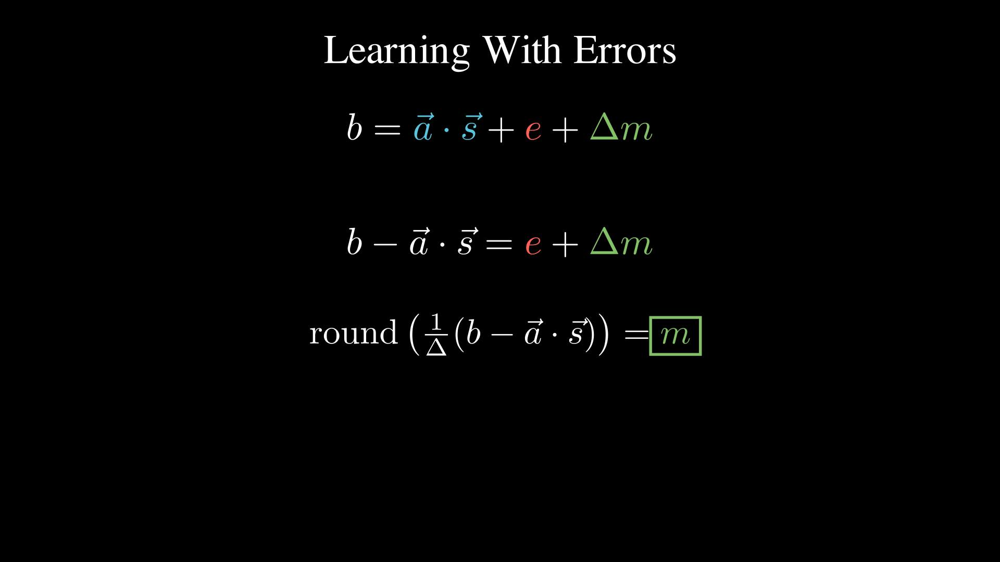
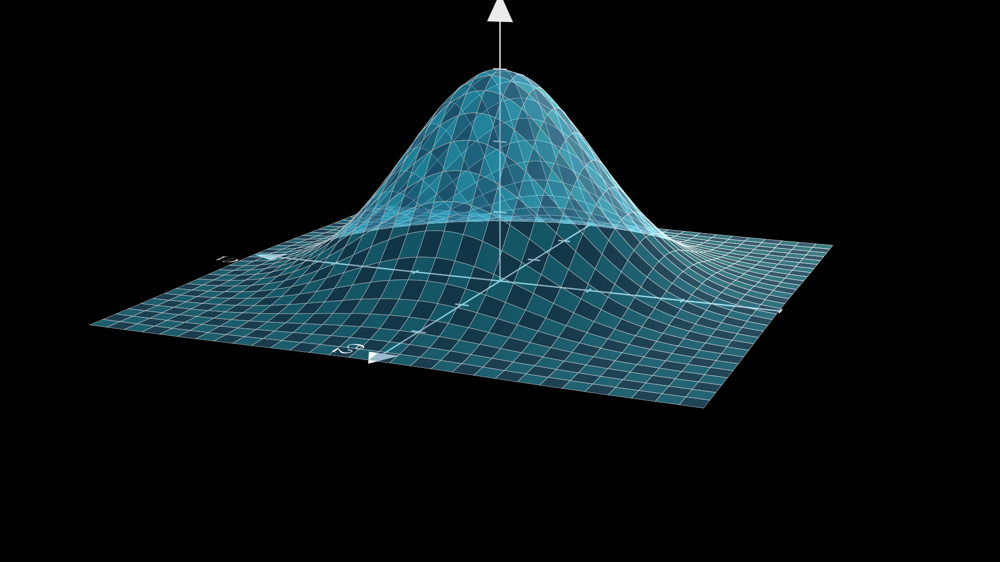
Here is the crucial fact that forms the entire foundation of the security.
Given as many samples \((\vec a,\, b)\) as you like, recovering \(\vec s\) is believed to be computationally hard, even for a quantum computer.
Why should that be hard? Without the error it is easy. Each sample is one linear equation in the unknowns \(s_1 \dots s_n\), so collect \(n\) samples and solve the system the way you solved simultaneous equations in school (Gaussian elimination, \(O(n^3)\), trivial). But elimination works by scaling and subtracting equations from each other, and every one of those steps amplifies the error terms. After a few eliminations the errors have snowballed and drowned out the very values you were solving for. The tiny \(e\) is essential. It is what turns easy linear algebra into the Learning With Errors problem. This is one of the most studied hard problems in post-quantum cryptography.
Most of cryptography rests on problems assumed hard on average, because nobody has broken a random instance yet. LWE comes with something stronger. When Regev (2005) introduced it, he proved that breaking randomly generated LWE instances is at least as hard as solving the worst case of certain lattice problems, the hardest instances in the family. Your randomly generated key is as strong as that worst case, under standard assumptions. Guarantees of that shape are rare, and they are a big part of why lattices took over post-quantum cryptography. What “lattice problem” means in practice is in the interlude below.
Encrypting and decrypting with LWE
To encrypt a message \(m \in \{0, \dots, t-1\}\), where \(t\) is the plaintext modulus from above, lift it into the high bits with \(\Delta = \lfloor q/t \rfloor\) and hide it inside a sample.
\[ b = \vec a \cdot \vec s + e + \Delta m \pmod q, \qquad \text{ciphertext} = (\vec a,\, b). \]
To decrypt, use the secret to strip the mask, then rescale and round.
\[ b - \vec a \cdot \vec s = \Delta m + e \pmod q \qquad\Rightarrow\qquad m = \left\lfloor \tfrac{1}{\Delta}\,(b - \vec a \cdot \vec s) \right\rceil. \]
The same thing, in code.
delta = q // t
b = (dot(a, s) + e + delta * m) % q # encrypt
m = round(signed(b - dot(a, s), q) / delta) % t # decryptDecryption succeeds as long as \(|e| < \Delta/2\), i.e. the noise stays inside the message’s lane. Treat that inequality as a noise budget. It is a resource every ciphertext is born with, which every operation will spend. It is the quantity we track for the rest of the post.
Adding encrypted numbers, for free
Watch what happens if we add two ciphertexts element-wise.
\[ (\vec a_1, b_1) + (\vec a_2, b_2) = (\vec a_1 + \vec a_2,\ b_1 + b_2). \]
Expanding \(b_1 + b_2\),
\[ (\vec a_1 + \vec a_2)\cdot \vec s + (e_1 + e_2) + \Delta(m_1 + m_2). \]
Look closely. It has exactly the shape of a fresh encryption of \(m_1 + m_2\), under the same secret, with mask \(\vec a_1 + \vec a_2\) and noise \(e_1 + e_2\). So the decryption routine, which knows nothing about how this ciphertext was produced, will correctly return \(m_1 + m_2\). We added two encrypted numbers without decrypting them. That is the “homomorphic” magic, and it turns out to be surprisingly easy.
The catch is in the noise term \(e_1 + e_2\). Every addition spends budget. Do it too many times and the accumulated noise escapes the lane.
Why move to rings?
Plain LWE works, but look at the cost. Every single number you encrypt drags a whole random vector \(\vec a\) behind it, thousands of entries long, and the only useful payload is one dot product. It is like sending a container ship to deliver one envelope.
The fix is a classic engineering move. Find a structure where one operation does \(n\) operations’ worth of work. Here that structure is polynomial multiplication, which computes something equivalent to \(n\) dot products at once. LWE upgraded with polynomials is called Ring-LWE, and it is what real schemes like FV use.
3. Ring-LWE: from vectors to polynomials
A polynomial is just an array
Do not let the word “polynomial” raise your heart rate. For our purposes a polynomial is an array of integers, and nothing more.
\[ a_{d-1} x^{d-1} + \dots + a_2 x^2 + a_1 x + a_0 \quad\Longleftrightarrow\quad \texttt{[a0, a1, a2, ..., a\_d-1]} \]
The \(x\)’s are never evaluated at any value. They are position markers, the way the “tens place” is a position marker in decimal. Index \(i\) of the array holds the coefficient of \(x^i\). Plaintext coefficients are reduced mod \(t\). Ciphertext coefficients are reduced mod \(q\), using the two moduli defined above.
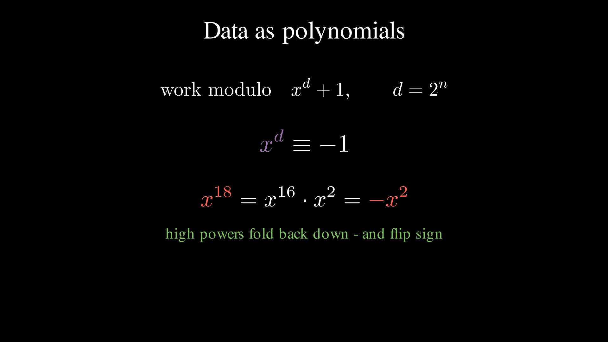
Adding two polynomials is element-wise array addition. The interesting part is multiplication.
The wrap-around rule: \(x^d + 1\)
We keep our arrays at a fixed length \(d\) (a power of two; we will use \(d = 16\) for illustration). But multiplying two degree-15 polynomials produces terms up to \(x^{30}\), which do not fit. Where do they go?
The scheme adopts one reduction rule, called working modulo \(x^{16} + 1\), and everything follows from one consequence.
\[ x^{16} \equiv -1. \]
So any term that overflows the array wraps around to the bottom and flips its sign.
\[ x^{18} = x^{16} \cdot x^2 = -x^2. \]
If you have ever written a ring buffer, this is a ring buffer with
one extra twist. Use index % 16 as usual, but each full wrap
multiplies the value by \(-1\). That
sign flip (which comes from the “+1” in \(x^{16}+1\)) scrambles products nicely, and it is why this exact modulus
is used. The interlude below shows that \(x\) acts like
a rotation.
Multiplication is “rotate and reflect”
Because of the rule, multiplying a term by a power of \(x\) rotates it around the 16 slots and reflects its sign whenever it wraps past the top.
\[ 2x^{14} \cdot x^4 = 2x^{18} \equiv -2x^2 \pmod{x^{16}+1}. \]
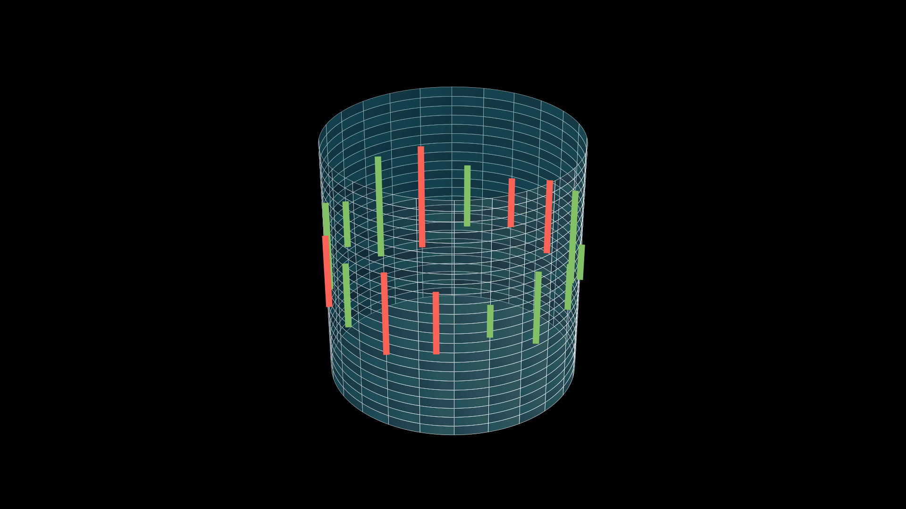
Full polynomial multiplication just does this for every pair of terms and adds the results up. In code it is a convolution plus the wrap rule, and it fits in eight lines.
def negacyclic_raw(a, b, d):
full = np.convolve(a, b) # ordinary polynomial product
reduced = np.zeros(d, dtype=np.int64)
for i, coeff in enumerate(full):
if i < d:
reduced[i] += coeff
else:
reduced[i - d] -= coeff # x^i = x^(i-d) * x^d = -x^(i-d)
return reducedThat is the entire algebraic machinery of the scheme. The math literature calls this structure the ring \(\mathbb{Z}_q[x]/(x^d+1)\) and this operation “negacyclic convolution”. You can read both as “fixed-size int arrays with the rotate-and-reflect multiply”.
Ring-LWE is LWE with arrays-and-dot-products replaced by polynomials-and-this-multiply. One polynomial product mixes every coefficient with every other, doing the work that previously took a whole matrix of samples.
Interlude: the math under the hood
You can build the full scheme knowing only what we have covered so far, and if you are impatient you may skip ahead to part 4. But a few words have been used without full explanation. roots of unity, cyclotomic, NTT, lattice problem. Each of them maps onto something you probably already know from engineering. Sections 4-6 will point back here.
Roots of unity: numbers that rotate
An \(n\)-th root of unity is any number \(\omega\) satisfying \(\omega^n = 1\). Multiply by it \(n\) times and you are back where you started.
Over the complex numbers, these are the \(n\) points spaced evenly around the unit
circle, and multiplying by one of them rotates you
\(1/n\) of a turn. That is the picture
to keep. A root of unity is a rotation written as a
multiplication. It is like i = (i + 1) % n, but for multiply instead of add.
Now look again at our wrap rule from part 3.
\[ x^{16} \equiv -1 \qquad\Rightarrow\qquad x^{32} \equiv 1. \]
The symbol \(x\) is a 32nd root of unity. One multiplication by \(x\) is a rotation by 1/32 of a turn. Sixteen steps is half a turn, and on a circle the point half a turn from \(1\) is \(-1\). That is the entire content of the sign flip. “Rotate and reflect” is rotation, and the reflection is what passing the halfway mark looks like.
Watch the animation until the fourth hop. The moment the dot lands on \(-1\) is the moment the “+1” in \(x^{16}+1\) stops being a syntax rule and becomes geometry. Negation is the far side of the circle.
The polynomial \(x^{16}+1\) is the polynomial whose roots are the (primitive) 32nd roots of unity. Papers sometimes call it a cyclotomic polynomial (“circle-cutting”), but you can ignore that label if you prefer.
You do not need complex numbers for this
Here is the part that surprises most engineers. The integers mod
\(q\) contain their own roots of unity.
No floats, no complex128. Watch the powers of 2 mod 17.
>>> [pow(2, k, 17) for k in range(1, 9)]
[2, 4, 8, 16, 15, 13, 9, 1]Eight distinct values and back to 1. The integer 2 behaves mod 17 exactly like a rotation by 1/8 of a turn. Halfway through the cycle,
>>> pow(2, 4, 17)
16 # 16 is -1 mod 17: half a turn is negation, againIt is the same movie as before, with the complex plane deleted. Eight integers, arranged in the cycle that multiplication-by-2 drives, behaving pixel-for-pixel like the rotating dot on the unit circle. When a structure survives having its scaffolding removed like this, that is usually math’s way of telling you the structure was the real thing all along.
The scheme wants a \(2d\)-th root of unity mod \(q\), and (for prime \(q\)) one exists precisely when \(q \equiv 1 \pmod{2d}\). For our toy \(d = 16\), the prime \(q = 257\) works.
>>> pow(136, 16, 257)
256 # -1 mod 257, so 136 is a 32nd root of unity mod 257This is why FHE libraries use oddly specific primes. When you
see 132120577 in a Microsoft SEAL parameter set, that is
not superstition. It is a prime with \(q
\equiv 1 \pmod{8192}\), chosen so that the rotations exist for
\(d = 4096\).
The NTT: an FFT for integers
Why do we care that modular rotations exist? Speed.
The convolution loop in negacyclic_raw is \(O(d^2)\). That is fine for \(d = 16\), painful for \(d = 4096\), and FHE executes it constantly.
The classic fix, the same one behind fast big-integer multiplication and
DSP convolution, is to change representation.
coefficient form --(evaluate at d special points)--> value form
value form: multiply pointwise O(d)
value form --(interpolate back)--> coefficient formWhen the evaluation points are the powers of a root of unity, both
transforms are the FFT, and the whole multiply costs \(O(d \log d)\). Doing this with complex
numbers drags in floating point and rounding error, unacceptable in
cryptography where every bit must be exact. Doing it with a root of
unity mod q keeps everything in exact integer
arithmetic. That is the Number Theoretic Transform
(NTT), the FFT retargeted from complex128 to
int64 % q. Evaluating at the odd
powers of the 32nd root bakes the \(x^{16} =
-1\) sign flip directly into the transform, so the
rotate-and-reflect wrap costs nothing extra.
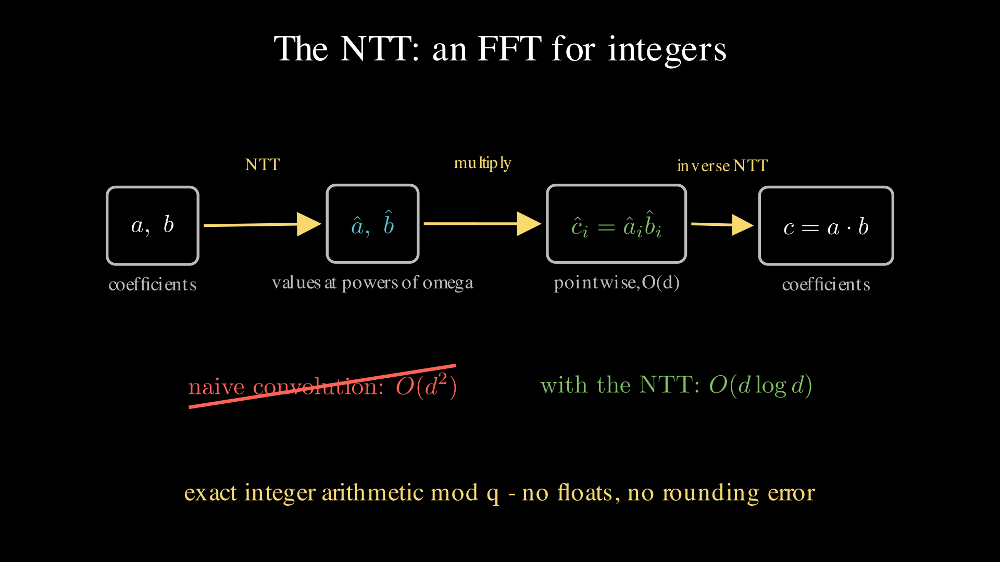
A useful mental model for reading real FHE code. A production library is, computationally, an NTT machine. Profile one under load and you will find it spending most of its life in NTT butterflies, with the same memory access pattern as every FFT kernel you have ever seen.
The Chinese Remainder Theorem: sharding for numbers
One more tool, and you already operate it in production. Sharding.
A number mod 15 is fully determined by its remainders mod 3 and mod 5.
>>> x = 11
>>> (x % 3, x % 5)
(2, 1) # the two shards
>>> [z for z in range(15) if (z % 3, z % 5) == (2, 1)]
[11] # shards uniquely identify the valueArithmetic also respects the shards. Add or multiply numbers mod 15 and each shard evolves independently, as if the other did not exist.
>>> y = 7
>>> ((x + y) % 15) % 3 == (x % 3 + y % 3) % 3
True
>>> ((x * y) % 15) % 5 == ((x % 5) * (y % 5)) % 5
TrueThat is the Chinese Remainder Theorem (CRT). Arithmetic mod 15 is two independent machines, mod 3 and mod 5, running in parallel behind one interface. The map “split into shards” converts + into shard-wise + and \(\times\) into shard-wise \(\times\). It preserves the operations. It is a homomorphism, the same word as in this post’s title.
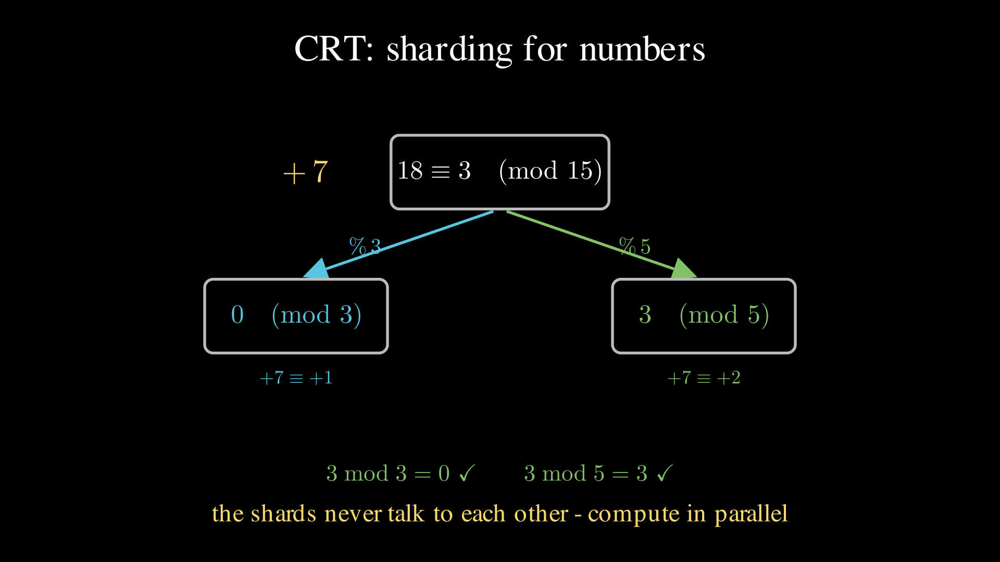
Hold that thought for part 6. With the right choice of plaintext modulus \(t\), the entire plaintext polynomial ring shards the same way, into \(d\) independent slots, turning one ciphertext into a SIMD register of \(d\) encrypted values. The shard decomposition is computed by evaluating at roots of unity.
What is a “lattice”, anyway?
Finally, the word that names the whole field. LWE belongs to lattice-based cryptography. A lattice is every point you can reach from the origin by taking integer steps along a fixed set of basis vectors. It is a perfectly regular, infinite grid, possibly skewed. In 2D you can draw one on graph paper. In cryptography, the dimension is in the hundreds or thousands.
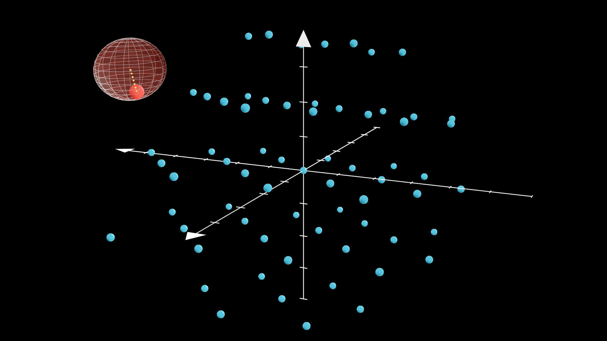
The connection to LWE. Collect the samples into \(\vec b = A\vec s + \vec e\). The set of all noiseless values \(A\vec s\) forms a lattice. The attacker’s job is to take a point \(\vec b\) lying near the grid and find the exact grid point it came from. In 2 dimensions that is trivial. In dimension 1000 it is brutally hard. The best known algorithms (lattice reduction, LLL and BKZ) cost time exponential in the dimension, and decades of effort, quantum algorithms included, have not broken through that wall. When a parameter table advertises “128-bit security”, it means \(d\) and ciphertext modulus \(q\) are sized so the best lattice-reduction attack costs on the order of \(2^{128}\) operations. See the Homomorphic Encryption Standard for published tables.
4. The Fan-Vercauteren scheme
Now we assemble a real scheme. Here is its API. The rest of this section implements it.
keygen() -> (pk, sk) # pk: pair of polys mod q, sk: small poly
encrypt(pk, m) -> ct # m: poly mod t, ct: pair of polys mod q
decrypt(sk, ct) -> m
add(ct_a, ct_b) -> ct # decrypts to m_a + m_b
mul(ct_a, ct_b) -> ct # decrypts to m_a * m_b (ct grows, sec. 5)A plaintext is a length-\(d\) polynomial with coefficients mod \(t\) (plaintext modulus). A ciphertext is a
pair of such polynomials with coefficients mod \(q\) (ciphertext modulus), where \(q
\gg t\). For a real deployment you might see \(d = 4096\), plaintext modulus \(t
\approx 2.9\times10^8\), and ciphertext modulus \(q \approx
9.2\times10^{18}\) (coefficients fit in uint64). To keep every number readable we use the
primer’s toy parameters.
\[ d = 16, \qquad t = 7, \qquad q = 874, \qquad \Delta = \lfloor q/t \rfloor = 124. \]
In plain language, \(d\) is the polynomial length (16 coefficients), \(t\) is the plaintext modulus (coefficients 0–6), and \(q\) is the ciphertext modulus (coefficients wrap mod 874).
These parameters are not secure. They exist only so the numbers fit on a screen. Real security comes from large \(d\) and carefully chosen \(q, t\).
Keys
The secret key \(s\) is a small polynomial, coefficients drawn from \(\{-1, 0, 1\}\). To build the public key, generate a uniformly random polynomial \(a\) (coefficients mod \(q\)) and a small error \(e\), then publish
\[ \mathbf{pk} = \big(\,[-a\,s + e]_q,\ a\,\big). \]
s = ternary() # coeffs in {-1, 0, 1} (secret)
a = uniform_q() # coeffs uniform mod q (public)
e = small_error() # discarded after keygen
pk = (mod_q(-mul(a, s) + e), a)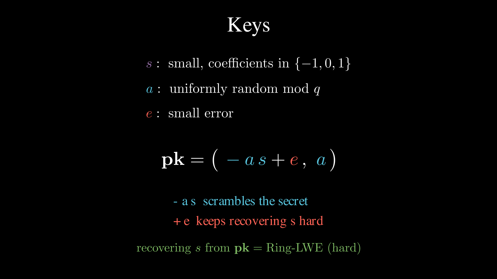
Look closely. \((-as+e,\ a)\) is exactly a Ring-LWE sample. The random \(a\) scrambles \(s\), and the small \(e\) makes solving back for \(s\) the hard Ring-LWE problem. Without \(e\), an attacker could recover \(s\) with straightforward algebra. The public key is a puzzle whose answer is the secret key, published in the hope that nobody can solve it.
Encryption
To encrypt a plaintext \(m\), draw a fresh small polynomial \(u\) (coefficients in \(\{-1,0,1\}\), think of it as a one-time randomizer) and two small errors \(e_1, e_2\), then form the pair
\[ \mathbf{ct}_0 = [\,\mathbf{pk}_0\, u + e_1 + \Delta m\,]_q, \qquad \mathbf{ct}_1 = [\,\mathbf{pk}_1\, u + e_2\,]_q. \]
u, e1, e2 = ternary(), small_error(), small_error()
ct0 = mod_q(mul(pk[0], u) + e1 + delta * m) # message rides in here
ct1 = mod_q(mul(pk[1], u) + e2) # helper for unmasking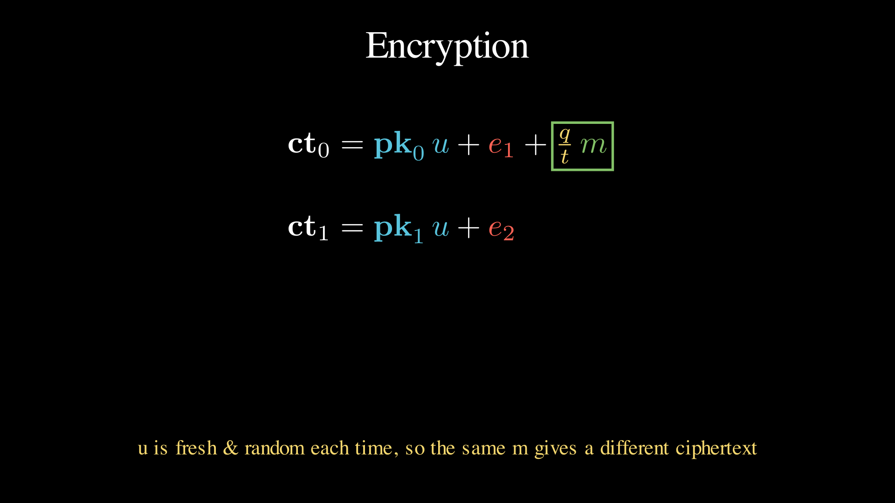
The message sits in \(\mathbf{ct}_0\), scaled into the high bits by \(\Delta\) and buried under the mask \(\mathbf{pk}_0 u\). The second component, \(\mathbf{ct}_1\), carries just enough information for the key holder to reconstruct and cancel that mask later. To anyone else it is more random-looking noise. Because \(u\) is drawn fresh every time, the same plaintext encrypts to a completely different ciphertext on each call, which is what a good encryption scheme needs.
Decryption
Compute \(\mathbf{ct}_0 + \mathbf{ct}_1 \cdot s\) and expand what each piece was made of. The mask terms are engineered to cancel.
\[ \mathbf{ct}_0 + \mathbf{ct}_1\, s = \Delta m + \underbrace{e_1 + e\,u + e_2 s}_{\text{noise, all small}} \pmod q. \]
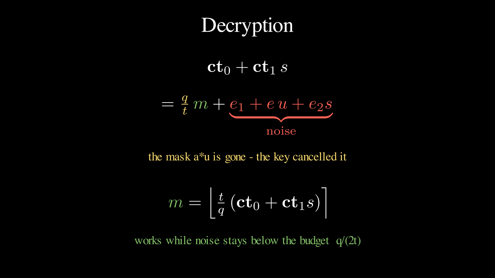
Why does it cancel? \(\mathbf{ct}_0\) contains \(\mathbf{pk}_0 u = (-as+e)u\), whose big part is \(-a s u\). \(\mathbf{ct}_1 \cdot s\) contains \(\mathbf{pk}_1 u \cdot s = a u s\). Equal and opposite. Gone. Only products of small things survive as noise. What remains is our friend from section 1, \(\Delta m + \text{noise}\). Message in the high bits, noise in the low bits. Rescale and round.
\[ m = \left[\left\lfloor \tfrac{t}{q}\,[\,\mathbf{ct}_0 + \mathbf{ct}_1 s\,]_q \right\rceil\right]_t \]
m = round_poly(signed(ct0 + mul(ct1, s), q) * t / q) % tAs before, this is correct precisely when every noise coefficient is smaller than the budget \(q/(2t)\).
A worked example you can run
The companion gist includes a small, single-file NumPy implementation, fv_toy.py, that does
everything above with the toy parameters and a fixed seed. Encrypting
the plaintext
\[ m = 3 + 4x^8 \equiv 3 - 3x^8 \pmod 7 \]
(that is, the array
[3, 0, 0, 0, 0, 0, 0, 0, 4, 0, 0, 0, 0, 0, 0, 0]) and
decrypting gives back \(3 - 3x^8\)
exactly, with the largest noise coefficient at 11,
comfortably inside the budget of \(q/(2t)
\approx 62\).
[visual params] d=16, t=7, q=874, Delta=q//t=124, budget q/(2t)=62.4
plaintext m = -3x^8 +3
decrypt(ct) = -3x^8 +3 (noise 11 / budget 62)
fresh round-trip OKRun it yourself.
python fv_toy.py5. Homomorphic operations
Addition
Just as with plain LWE, adding two FV ciphertexts element-wise adds the plaintexts.
\[ E(m_1) + E(m_2) = E(m_1 + m_2). \]
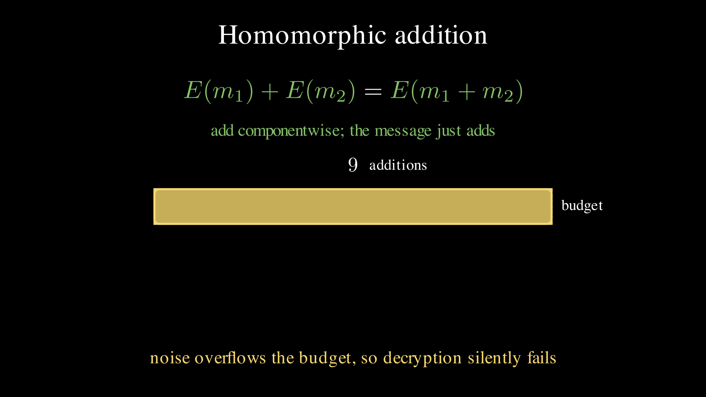
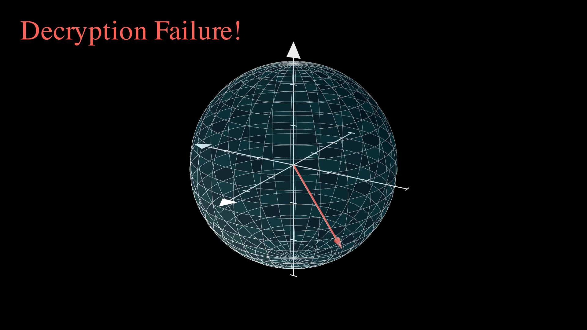
But the noise adds too, and not all noise is created equal. Expand what decryption of the sum will see, and the leftover noise groups into three kinds of term.
- errors plus errors (\(e_1 + e_3\)). Grows gently, like \(\sqrt{n}\) after \(n\) additions.
- an error times the summed randomizers (\(e \cdot (u_1 + u_2)\)). A ring product, so each output coefficient is a sum of roughly \(\tfrac{2}{3}d\) randomly-signed contributions. Grows much faster.
- summed errors times the secret (\((e_2 + e_4) \cdot s\)). Same story.
Here is the actual distribution of each kind of term after adding 1,
5, and 30 ciphertexts (regenerated by noise_plots.py).
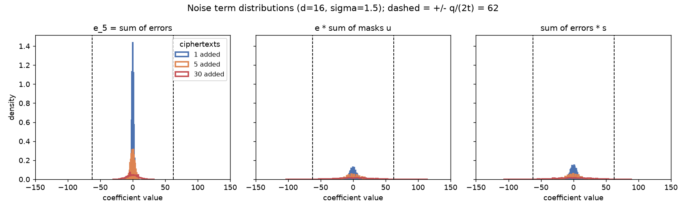
Tracking the largest noise coefficient as additions pile up shows the budget \(q/(2t) = 62\) getting used up.
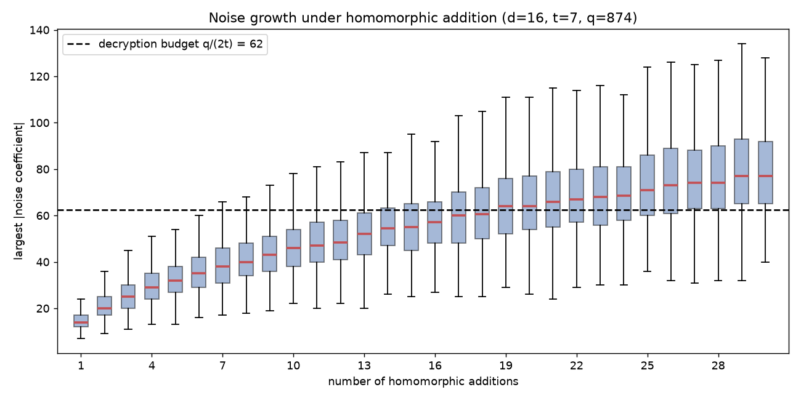
For these toy parameters you can safely add only a couple of ciphertexts before decryption starts to fail. Note the failure mode. There is no exception, no error code, no integrity check to fail. Decryption just rounds into the wrong lane and returns a wrong polynomial, like memory corruption without a checksum. Real deployments buy headroom with a much larger ratio \(q/t\), sized to the workload they intend to run.
Multiplication
Multiplication is where FV gets clever. The trick is a change of perspective. Stop reading a ciphertext as a pair, and read it as a function of the secret key, specifically the linear function \(f(s) = \mathbf{ct}_0 + \mathbf{ct}_1 \cdot s\) that decryption evaluates. For a valid ciphertext, \(f(s) \approx \Delta m\).
Nothing about the bytes changes in this step, only the way we read them. Remember that feeling. Finding a second way to read something you thought you already understood is half of cryptography, and this new reading is about to make multiplication follow from simple algebra.
Now take two ciphertexts and multiply them as functions.
\[ (a_0 + a_1 s)(b_0 + b_1 s) = a_0 b_0 + (a_0 b_1 + a_1 b_0)\,s + a_1 b_1\,s^2. \]
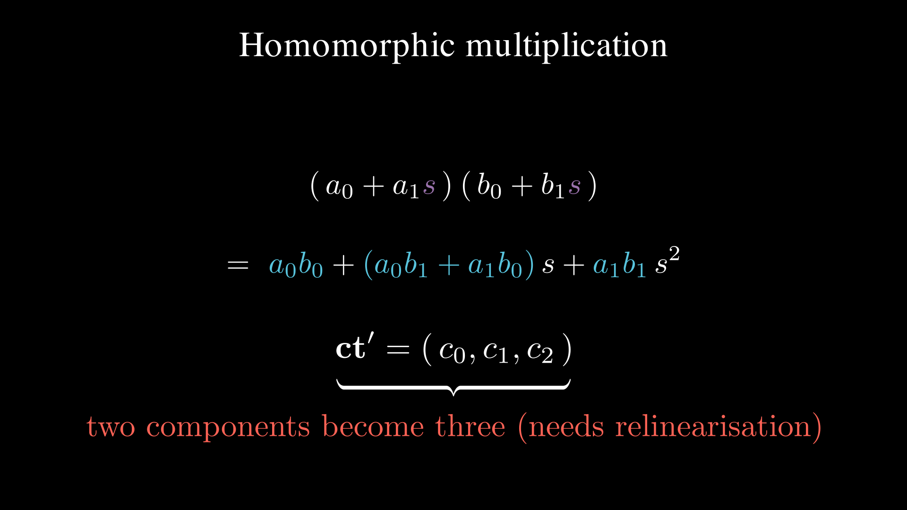
Evaluated at the secret, the left side is \(\approx \Delta m_1 \cdot \Delta m_2\), which contains the product we want. The right side tells us the price. The result is quadratic in \(s\), so the new ciphertext needs three components \((\mathbf{c}_0, \mathbf{c}_1, \mathbf{c}_2)\), one per power of \(s\). Each is computed from the inputs directly (no secret needed), with a \(t/q\) rescale to knock the message scaling back down from \(\Delta^2\) to \(\Delta\).
\[ \mathbf{c}_0 = \left[\tfrac{t}{q}\,\mathbf{a}_0 \mathbf{b}_0\right]_q, \quad \mathbf{c}_1 = \left[\tfrac{t}{q}(\mathbf{a}_1 \mathbf{b}_0 + \mathbf{a}_0 \mathbf{b}_1)\right]_q, \quad \mathbf{c}_2 = \left[\tfrac{t}{q}\,\mathbf{a}_1 \mathbf{b}_1\right]_q. \]
Decryption generalizes in the obvious way by evaluating the quadratic.
\[ m = \left[\left\lfloor \tfrac{t}{q}\,[\,\mathbf{ct}_0 + \mathbf{ct}_1 s + \mathbf{ct}_2 s^2\,]_q \right\rceil\right]_t. \]
One implementation subtlety worth flagging, because it is an
easy bug to write (I wrote it). Compute the products \(\mathbf{a}_i \mathbf{b}_j\) over
the plain integers first, then apply the \(t/q\) rescale, and only then reduce mod
\(q\). If you reduce mod \(q\) before rescaling, you throw away
exactly the high-order information the rescale needs, and decryption
returns garbage. In fv_toy.py this is why multiplication
calls negacyclic_raw (no mod) and rescales afterwards.
Multiplication burns noise budget far faster than addition, so the
toy \(q = 874\) has no headroom for it
at all. Bumping to \(q = 65537\) gives
room to spare, and fv_toy.py confirms a full encrypted
multiply round-trips.
[headroom params] d=16, t=7, q=65537, Delta=q//t=9362, budget q/(2t)=4681
hom mul: decrypt(E(m1)*E(m2)) = -1x^8 +2x^6 -2x^5 -2x^3 +2
expected m1*m2 = -1x^8 +2x^6 -2x^5 -2x^3 +2
ciphertext grew from 2 to 3 components
homomorphic multiplication OKRelinearisation: shrinking the ciphertext back
Every multiplication adds a component. Two parts become three, three become four. Multiply \(k\) times and your ciphertext has \(k+2\) parts. Costs compound quadratically. Left alone, this does not scale.
The fix is relinearisation. The key holder publishes an “evaluation key”, which is a masked, noisy, safe-to-share encoding of \(s^2\), built from the same Ring-LWE construction as everything else. With it, anyone can rewrite the \(\mathbf{c}_2 s^2\) term as an equivalent expression using only \(s^1\), collapsing three components back to two. Think of it as re-normalizing your data back to the standard representation after every multiply. It costs a little extra noise, and in exchange ciphertext size stays constant no matter how many multiplications you chain.
6. Where it goes from here
We now have encrypted addition and encrypted multiplication. Since any computation can be compiled down to adds and multiplies (that is what a circuit is), we can in principle compute anything on encrypted data. Before the remaining ideas, here is the whole life of a ciphertext on one screen, with the two resources every operation touches, noise and size, tracked alongside.
encrypt(pk, m) noise: fresh size: 2 polynomials
|
v
add(ct, ct') noise: + small size: unchanged
|
v
mul(ct, ct') noise: x large size: 2 -> 3 components
|
v
relinearise(ct) noise: + a little size: 3 -> 2 again
|
v
bootstrap(ct) noise: RESET (when the budget runs low)
|
v
decrypt(sk, ct) correct iff total noise < q/(2t)Three more ideas make it practical.
Batching (SIMD packing). The Chinese Remainder Theorem, the sharding trick from the interlude, applies to the whole plaintext polynomial ring. For the right plaintext modulus \(t\), one plaintext shards into thousands of independent “slots”, so one homomorphic multiply acts on all slots at once, like a SIMD vector instruction. Polynomial products themselves are computed with the NTT from the interlude in \(O(d \log d)\). Together these turn FHE from “seconds per operation” into “millions of slot-operations per second”.
Bootstrapping. Every operation spends noise budget, so a fixed ratio \(q/t\) only supports a bounded depth of computation. Bootstrapping, the move that solved the 31-year-old problem in Gentry’s 2009 thesis, runs the decryption function itself homomorphically under a fresh key. The ciphertext is decrypted inside another layer of encryption, and out comes a new ciphertext of the same message with the noise reset to fresh levels. It is expensive garbage collection for noise, but it lets a program run indefinitely. This upgrades “somewhat homomorphic” (bounded depth) to fully homomorphic (unbounded).
Choosing parameters. Security and capability pull in opposite directions. A larger ratio \(q/t\) buys noise budget (deeper circuits) but weakens security for a fixed \(d\). Raising \(d\) restores security but costs performance. In practice you do not guess these numbers by hand. The Homomorphic Encryption Standard publishes tables mapping \((d, q)\) to a security level in bits, and libraries either enforce or default to standardized parameter sets.
The engineer's phrasebook
Every key idea in this post has an everyday engineering twin. The analogies are scattered through the text; here they are in one place.
| FHE concept | You already know it as |
|---|---|
| arithmetic mod \(q\) | fixed-width integer overflow (uint32 is arithmetic mod \(2^{32}\)) |
| the signed range \([x]_q\) | reading the same bits as int8 instead of uint8 |
| polynomial in \(\mathbb{Z}_q[x]/(x^d+1)\) | a fixed-size int array; a ring buffer whose wrap flips the sign |
| scaling by \(\Delta\) | fixed-point encoding: message in the high bits, noise in the low bits |
| noise budget \(q/(2t)\) | error headroom that every operation spends |
| decryption failure | silent data corruption: no exception, just a wrong answer |
| NTT | the FFT, retargeted from complex128 to int64 % q |
| CRT batching | sharding + SIMD: one ciphertext is a vector register of encrypted slots |
| relinearisation | re-normalizing to the standard representation after each multiply |
| bootstrapping | garbage collection for noise |
Try it with a real library
The toy code in this post is for understanding, not for production. When you want the real thing, these are the established open-source implementations.
| Library | Language | Notes |
|---|---|---|
| Microsoft SEAL | C++ | Mature, widely used; implements BFV (this post’s scheme) and CKKS |
| OpenFHE | C++ | Successor to PALISADE; broadest scheme coverage |
| Lattigo | Go | Pure Go, good for services |
| TFHE-rs | Rust | TFHE scheme, fast bootstrapping, boolean/int APIs |
| Pyfhel | Python | Python wrapper over SEAL, easiest to prototype with |
The FV scheme in this post appears in most libraries under the name BFV (Brakerski-Fan-Vercauteren). See Brakerski (2012) for the scale-invariant scheme that FV ports to ring-LWE.
Conclusion
Strip away the notation and the whole scheme rests on one idea. Put the message in the high bits, hide it under a linear mask you can only remove with a secret key, and add just enough noise that removing the mask without the key is a hard problem. Because the message rides along with only a scaling, addition and multiplication pass straight through to the plaintext, at the price of growing noise that we manage with budgets, relinearisation, and bootstrapping.
Security comes from the same place. The best known attacks on Learning With Errors are the lattice-reduction algorithms from the interlude, and they gain no meaningful quantum speedup. That is why these schemes are considered post-quantum secure. Related lattice math also underpins NIST post-quantum standards such as ML-KEM.
If you want to poke at it, everything here is runnable. The
companion code lives in one
gist. fv_toy.py is the complete toy FV scheme (keygen,
encrypt, decrypt, add, multiply) in a single file of NumPy, and
noise_plots.py regenerates the noise figures. The Manim
sources for every animation and diagram are in the site's repository.
Acknowledgements
This post stands on Stephen Hardy’s original Homomorphic Encryption Illustrated Primer, and on the Fan-Vercauteren and Brakerski-Gentry-Vaikuntanathan papers listed below. Any errors introduced in the retelling are mine.
References
- Rivest, R. L., Adleman, L., and Dertouzos, M. L. (1978). On Data Banks and Privacy Homomorphisms.
- Regev, O. (2005). On Lattices, Learning with Errors, Random Linear Codes, and Cryptography. Journal of the ACM, 2009 (STOC 2005 preliminary version).
- Gentry, C. (2009). Fully homomorphic encryption using ideal lattices. STOC 2009.
- Brakerski, Z., Gentry, C., and Vaikuntanathan, V. (2011). Fully Homomorphic Encryption without Bootstrapping.
- Brakerski, Z. (2012). Fully Homomorphic Encryption without Modulus Switching from Classical GapSVP.
- Fan, J. and Vercauteren, F. (2012). Somewhat Practical Fully Homomorphic Encryption.
- Hardy, S. (2018). A Homomorphic Encryption Illustrated Primer.
- Albrecht, M. et al. (2018). Homomorphic Encryption Security Standard.
- NIST. Post-Quantum Cryptography Project.